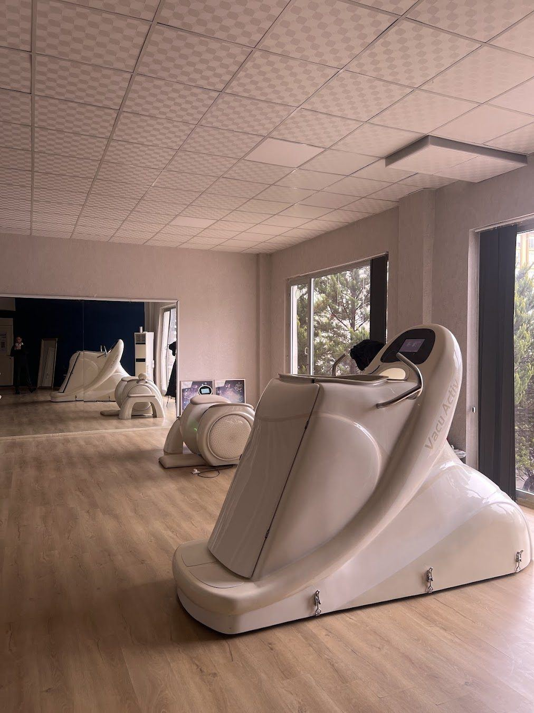

Diyetisyen
Hedefinize ölçülebilir adımlarla
Kişiye özel beslenme, vücut analizi ve sağlıklı yaşam cihazlarıyla Duisburg Bulvarı'nda.
Çalışma saatleriPazartesi 08:00-23:00
Atatürk MahallesiŞehitkamil, Gaziantep
Beslenme programları
Hedefinize ve günlük düzeninize göre hazırlanan planlar.

Vücut kitle indeksinizi hesaplayın
Boy ve kilonuzu girin, VKİ değerinizi ve günlük yaklaşık su ihtiyacınızı görün.
VKİ değeriniz
-
Değerleri girdiğinizde sonuç burada görünür.
VKİ yaş, kas oranı ve gebelik gibi durumları hesaba katmaz. Kişisel değerlendirme için görüşme planlayın.
Süreç nasıl işler?
Yasaklar listesi değil, adım adım kurulan bir düzen.
Tanışma görüşmesi
Beslenme alışkanlıklarınız, günlük düzeniniz ve hedefiniz konuşulur.
Ölçüm ve tahliller
Vücut analizi yapılır, varsa güncel tahlil sonuçlarınız değerlendirilir.
Kişiye özel plan
Sevdiğiniz besinleri ve yaşam düzeninizi hesaba katan bir plan hazırlanır.
Düzenli takip
Haftalık ya da iki haftalık kontrollerle plan sizin ilerlemenize göre güncellenir.
Danışmanlık ofisi
Size uygun bir saat bulalım
Formu doldurun ya da arayın, randevunuzu birlikte planlayalım.